Cone Programming¶
In this chapter we consider convex optimization problems of the form
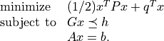
The linear inequality is a generalized inequality with respect to a proper convex cone. It may include componentwise vector inequalities, second-order cone inequalities, and linear matrix inequalities.
The main solvers are conelp and
coneqp, described in the
sections Linear Cone Programs and Quadratic Cone Programs. The function
conelp is restricted to problems with linear cost functions, and
can detect primal and dual infeasibility. The function coneqp
solves the general quadratic problem, but requires the problem to be
strictly primal and dual feasible. For convenience (and backward
compatibility), simpler interfaces to these function are also provided
that handle pure linear programs, quadratic programs, second-order cone
programs, and semidefinite programs. These are described in the sections
Linear Programming, Quadratic Programming, Second-Order Cone Programming, Semidefinite Programming.
In the section Exploiting Structure we explain how custom solvers can
be implemented that exploit structure in cone programs. The last two
sections describe optional interfaces to external solvers, and the
algorithm parameters that control the cone programming solvers.
Linear Cone Programs¶
-
cvxopt.solvers.conelp(c, G, h[, dims[, A, b[, primalstart[, dualstart[, kktsolver]]]]])¶ Solves a pair of primal and dual cone programs
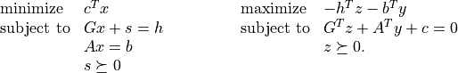
The primal variables are
 and
and  . The dual variables
are
. The dual variables
are  ,
,  . The inequalities are interpreted as
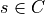, 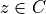, where
. The inequalities are interpreted as
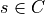, 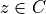, where  is a cone defined as
a Cartesian product of a nonnegative orthant, a number of second-order
cones, and a number of positive semidefinite cones:
is a cone defined as
a Cartesian product of a nonnegative orthant, a number of second-order
cones, and a number of positive semidefinite cones: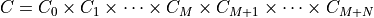
with
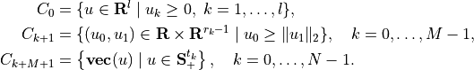
In this definition, 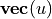 denotes a symmetric matrix
 stored as a vector in column major order. The structure of
is specified by
stored as a vector in column major order. The structure of
is specified by dims. This argument is a dictionary with three fields.dims['l']: , the dimension of the nonnegative orthant (a nonnegative
integer).
, the dimension of the nonnegative orthant (a nonnegative
integer).dims['q']: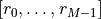, a list with the dimensions of the second-order cones (positive integers).
dims['s']: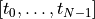, a list with the dimensions of the positive semidefinite cones (nonnegative integers).
The default value of
dimsis{'l': G.size[0], 'q': [], 's': []}, i.e., by default the inequality is interpreted as a componentwise vector inequality.The arguments
c,h, andbare real single-column dense matrices.GandAare real dense or sparse matrices. The number of rows ofGandhis equal to
The columns of
Gandhare vectors in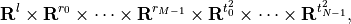
where the last
 components represent symmetric matrices
stored in column major order. The strictly upper triangular entries
of these matrices are not accessed (i.e., the symmetric matrices are
stored in the
components represent symmetric matrices
stored in column major order. The strictly upper triangular entries
of these matrices are not accessed (i.e., the symmetric matrices are
stored in the 'L'-type column major order used in theblasandlapackmodules). The default values forAandbare matrices with zero rows, meaning that there are no equality constraints.primalstartis a dictionary with keys'x'and's', used as an optional primal starting point.primalstart['x']andprimalstart['s']are real dense matrices of size ( , 1) and (
, 1) and ( , 1), respectively,
where is the length of
, 1), respectively,
where is the length of c. The vectorprimalstart['s']must be strictly positive with respect to the cone.dualstartis a dictionary with keys'y'and'z', used as an optional dual starting point.dualstart['y']anddualstart['z']are real dense matrices of size ( , 1)
and (, 1), respectively, where is the number of
rows in
, 1)
and (, 1), respectively, where is the number of
rows in A. The vectordualstart['s']must be strictly positive with respect to the cone.The role of the optional argument
kktsolveris explained in the section Exploiting Structure.conelpreturns a dictionary that contains the result and information about the accuracy of the solution. The most important fields have keys'status','x','s','y','z'. The'status'field is a string with possible values'optimal','primal infeasible','dual infeasible', and'unknown'. The meaning of the'x','s','y','z'fields depends on the value of'status'.'optimal'In this case the
'x','s','y', and'z'entries contain the primal and dual solutions, which approximately satisfy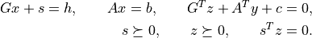
The other entries in the output dictionary summarize the accuracy with which these optimality conditions are satisfied. The fields
'primal objective','dual objective', and'gap'give the primal objective , dual
objective , and the gap 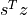. The
field
, dual
objective , and the gap 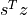. The
field 'relative gap'is the relative gap, defined as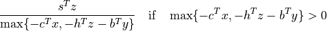
and
Noneotherwise. The fields'primal infeasibility'and'dual infeasibility'are the residuals in the primal and dual equality constraints, defined as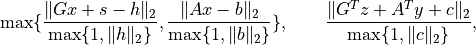
respectively.
'primal infeasible'The
'x'and's'entries areNone, and the'y','z'entries provide an approximate certificate of infeasibility, i.e., vectors that approximately satisfy
The field
'residual as primal infeasibility certificate'gives the residual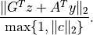
'dual infeasible'The
'y'and'z'entries areNone, and the'x'and's'entries contain an approximate certificate of dual infeasibility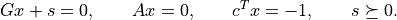
The field
'residual as dual infeasibility certificate'gives the residual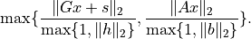
'unknown'This indicates that the algorithm terminated early due to numerical difficulties or because the maximum number of iterations was reached. The
'x','s','y','z'entries contain the iterates when the algorithm terminated. Whether these entries are useful, as approximate solutions or certificates of primal and dual infeasibility, can be determined from the other fields in the dictionary.The fields
'primal objective','dual objective','gap','relative gap','primal infeasibility','dual infeasibility'are defined as when'status'is'optimal'. The field'residual as primal infeasibility certificate'is defined as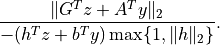
if 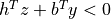, and
Noneotherwise. A small value of this residual indicates that and ,
divided by  , are an approximate proof of primal
infeasibility. The field
, are an approximate proof of primal
infeasibility. The field
'residual as dual infeasibility certificate'is defined as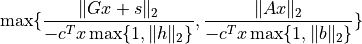
if 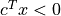, and as
Noneotherwise. A small value indicates that and , divided by 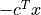
are an approximate proof of dual infeasibility.
It is required that
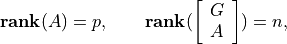
where
is the number or rows of  and is
the number of columns of
and is
the number of columns of  and .
and .
As an example we solve the problem
![\begin{array}{ll}
\mbox{minimize} & -6x_1 - 4x_2 - 5x_3 \\*[1ex]
\mbox{subject to}
& 16x_1 - 14x_2 + 5x_3 \leq -3 \\*[1ex]
& 7x_1 + 2x_2 \leq 5 \\*[1ex]
& \left\| \left[ \begin{array}{c}
8x_1 + 13x_2 - 12x_3 - 2 \\
-8x_1 + 18x_2 + 6x_3 - 14 \\
x_1 - 3x_2 - 17x_3 - 13 \end{array}\right] \right\|_2
\leq -24x_1 - 7x_2 + 15x_3 + 12 \\*[3ex]
& \left\| \left[
\begin{array}{c} x_1 \\ x_2 \\ x_3 \end{array}
\right] \right\|_2 \leq 10 \\*[3ex]
& \left[\begin{array}{ccc}
7x_1 + 3x_2 + 9x_3 & -5x_1 + 13x_2 + 6x_3 &
x_1 - 6x_2 - 6x_3\\
-5x_1 + 13x_2 + 6x_3 & x_1 + 12x_2 - 7x_3 &
-7x_1 -10x_2 - 7x_3\\
x_1 - 6x_2 -6x_3 & -7x_1 -10x_2 -7 x_3 &
-4x_1 -28 x_2 -11x_3
\end{array}\right]
\preceq \left[\begin{array}{ccc}
68 & -30 & -19 \\
-30 & 99 & 23 \\
-19 & 23 & 10 \end{array}\right].
\end{array}](_images/math/a5d23ddad04b332c54e468fd62d6493589d61339.png)
>>> from cvxopt import matrix, solvers
>>> c = matrix([-6., -4., -5.])
>>> G = matrix([[ 16., 7., 24., -8., 8., -1., 0., -1., 0., 0.,
7., -5., 1., -5., 1., -7., 1., -7., -4.],
[-14., 2., 7., -13., -18., 3., 0., 0., -1., 0.,
3., 13., -6., 13., 12., -10., -6., -10., -28.],
[ 5., 0., -15., 12., -6., 17., 0., 0., 0., -1.,
9., 6., -6., 6., -7., -7., -6., -7., -11.]])
>>> h = matrix( [ -3., 5., 12., -2., -14., -13., 10., 0., 0., 0.,
68., -30., -19., -30., 99., 23., -19., 23., 10.] )
>>> dims = {'l': 2, 'q': [4, 4], 's': [3]}
>>> sol = solvers.conelp(c, G, h, dims)
>>> sol['status']
'optimal'
>>> print(sol['x'])
[-1.22e+00]
[ 9.66e-02]
[ 3.58e+00]
>>> print(sol['z'])
[ 9.30e-02]
[ 2.04e-08]
[ 2.35e-01]
[ 1.33e-01]
[-4.74e-02]
[ 1.88e-01]
[ 2.79e-08]
[ 1.85e-09]
[-6.32e-10]
[-7.59e-09]
[ 1.26e-01]
[ 8.78e-02]
[-8.67e-02]
[ 8.78e-02]
[ 6.13e-02]
[-6.06e-02]
[-8.67e-02]
[-6.06e-02]
[ 5.98e-02]
Only the entries of G and h defining the lower triangular portions
of the coefficients in the linear matrix inequalities are accessed. We
obtain the same result if we define G and h as below.
>>> G = matrix([[ 16., 7., 24., -8., 8., -1., 0., -1., 0., 0.,
7., -5., 1., 0., 1., -7., 0., 0., -4.],
[-14., 2., 7., -13., -18., 3., 0., 0., -1., 0.,
3., 13., -6., 0., 12., -10., 0., 0., -28.],
[ 5., 0., -15., 12., -6., 17., 0., 0., 0., -1.,
9., 6., -6., 0., -7., -7., 0., 0., -11.]])
>>> h = matrix( [ -3., 5., 12., -2., -14., -13., 10., 0., 0., 0.,
68., -30., -19., 0., 99., 23., 0., 0., 10.] )
Quadratic Cone Programs¶
-
cvxopt.solvers.coneqp(P, q[, G, h[, dims[, A, b[, initvals[, kktsolver]]]]])¶ Solves a pair of primal and dual quadratic cone programs
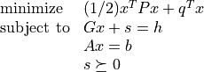
and
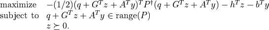
The primal variables are
and the slack variable .
The dual variables are and . The inequalities are
interpreted as , , where is a
cone defined as a Cartesian product of a nonnegative orthant, a number
of second-order cones, and a number of positive semidefinite cones:with
In this definition, denotes a symmetric matrix
stored as a vector in column major order. The structure of
is specified by dims. This argument is a dictionary with three fields.dims['l']:- , the dimension of the nonnegative orthant (a nonnegative
integer).
dims['q']:, a list with the dimensions of the second-order cones (positive integers).
dims['s']:, a list with the dimensions of the positive semidefinite cones (nonnegative integers).
The default value of
dimsis{'l': G.size[0], 'q': [], 's': []}, i.e., by default the inequality is interpreted as a componentwise vector inequality.Pis a square dense or sparse real matrix, representing a positive semidefinite symmetric matrix in'L'storage, i.e., only the lower triangular part ofPis referenced.qis a real single-column dense matrix.The arguments
handbare real single-column dense matrices.GandAare real dense or sparse matrices. The number of rows ofGandhis equal toThe columns of
Gandhare vectors inwhere the last
components represent symmetric matrices stored
in column major order. The strictly upper triangular entries of these
matrices are not accessed (i.e., the symmetric matrices are stored
in the 'L'-type column major order used in theblasandlapackmodules). The default values forG,h,A, andbare matrices with zero rows, meaning that there are no inequality or equality constraints.initvalsis a dictionary with keys'x','s','y','z'used as an optional starting point. The vectorsinitvals['s']andinitvals['z']must be strictly positive with respect to the cone. If the argument
initvalsor any the four entries in it are missing, default starting points are used for the corresponding variables.The role of the optional argument
kktsolveris explained in the section Exploiting Structure.coneqpreturns a dictionary that contains the result and information about the accuracy of the solution. The most important fields have keys'status','x','s','y','z'. The'status'field is a string with possible values'optimal'and'unknown'.'optimal'In this case the
'x','s','y', and'z'entries contain primal and dual solutions, which approximately satisfy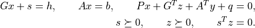
'unknown'This indicates that the algorithm terminated early due to numerical difficulties or because the maximum number of iterations was reached. The
'x','s','y','z'entries contain the iterates when the algorithm terminated.
The other entries in the output dictionary summarize the accuracy with which the optimality conditions are satisfied. The fields
'primal objective','dual objective', and'gap'give the primal objective, the dual
objective calculated as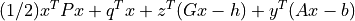
and the gap . The field
'relative gap'is the relative gap, defined asand
Noneotherwise. The fields'primal infeasibility'and'dual infeasibility'are the residuals in the primal and dual equality constraints, defined as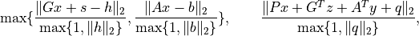
respectively.
It is required that the problem is solvable and that
![\newcommand{\Rank}{\mathop{\bf rank}}
\Rank(A) = p, \qquad
\Rank(\left[\begin{array}{c} P \\ G \\ A \end{array}\right]) = n,](_images/math/70b640ff0659b7d33287ba001e5b26c6c93a96ba.png)
where
is the number or rows of and is the
number of columns of and .
As an example, we solve a constrained least-squares problem
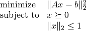
with
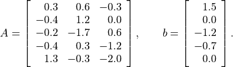
>>> from cvxopt import matrix, solvers
>>> A = matrix([ [ .3, -.4, -.2, -.4, 1.3 ],
[ .6, 1.2, -1.7, .3, -.3 ],
[-.3, .0, .6, -1.2, -2.0 ] ])
>>> b = matrix([ 1.5, .0, -1.2, -.7, .0])
>>> m, n = A.size
>>> I = matrix(0.0, (n,n))
>>> I[::n+1] = 1.0
>>> G = matrix([-I, matrix(0.0, (1,n)), I])
>>> h = matrix(n*[0.0] + [1.0] + n*[0.0])
>>> dims = {'l': n, 'q': [n+1], 's': []}
>>> x = solvers.coneqp(A.T*A, -A.T*b, G, h, dims)['x']
>>> print(x)
[ 7.26e-01]
[ 6.18e-01]
[ 3.03e-01]
Linear Programming¶
The function lp is an interface to
conelp for linear
programs. It also provides the option of using the linear programming
solvers from GLPK or MOSEK.
-
cvxopt.solvers.lp(c, G, h[, A, b[, solver[, primalstart[, dualstart]]]])¶ Solves the pair of primal and dual linear programs
The inequalities are componentwise vector inequalities.
The
solverargument is used to choose among three solvers. When it is omitted orNone, the CVXOPT functionconelpis used. The external solvers GLPK and MOSEK (if installed) can be selected by settingsolverto'glpk'or'mosek'; see the section Optional Solvers. The meaning of the other arguments and the return value are the same as forconelpcalled withdimsequal to{'l': G.size[0], 'q': [], 's': []}.The initial values are ignored when
solveris'mosek'or'glpk'. With the GLPK option, the solver does not return certificates of primal or dual infeasibility: if the status is'primal infeasible'or'dual infeasible', all entries of the output dictionary areNone. If the GLPK or MOSEK solvers are used, and the code returns with status'unknown', all the other fields in the output dictionary areNone.
As a simple example we solve the LP
![\begin{array}[t]{ll}
\mbox{minimize} & -4x_1 - 5x_2 \\
\mbox{subject to} & 2x_1 + x_2 \leq 3 \\
& x_1 + 2x_2 \leq 3 \\
& x_1 \geq 0, \quad x_2 \geq 0.
\end{array}](_images/math/485e65f87f30e5ab52138c945744fe97e6dd87dc.png)
>>> from cvxopt import matrix, solvers
>>> c = matrix([-4., -5.])
>>> G = matrix([[2., 1., -1., 0.], [1., 2., 0., -1.]])
>>> h = matrix([3., 3., 0., 0.])
>>> sol = solvers.lp(c, G, h)
>>> print(sol['x'])
[ 1.00e+00]
[ 1.00e+00]
Quadratic Programming¶
The function qp is an interface to
coneqp for quadratic
programs. It also provides the option of using the quadratic programming
solver from MOSEK.
-
cvxopt.solvers.qp(P, q[, G, h[, A, b[, solver[, initvals]]]])¶ Solves the pair of primal and dual convex quadratic programs
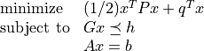
and
![\newcommand{\Range}{\mbox{\textrm{range}}}
\begin{array}[t]{ll}
\mbox{maximize} & -(1/2) (q+G^Tz+A^Ty)^T P^\dagger
(q+G^Tz+A^Ty) -h^T z - b^T y \\
\mbox{subject to} & q + G^T z + A^T y \in \Range(P) \\
& z \succeq 0.
\end{array}](_images/math/7075b711b50c004803b51912b9dca99d35c65d35.png)
The inequalities are componentwise vector inequalities.
The default CVXOPT solver is used when the
solverargument is absent orNone. The MOSEK solver (if installed) can be selected by settingsolverto'mosek'; see the section Optional Solvers. The meaning of the other arguments and the return value is the same as forconeqpcalled with dims equal to{'l': G.size[0], 'q': [], 's': []}.When
solveris'mosek', the initial values are ignored, and the'status'string in the solution dictionary can take four possible values:'optimal','unknown'.'primal infeasible','dual infeasible'.'primal infeasible'This means that a certificate of primal infeasibility has been found. The
'x'and's'entries areNone, and the'z'and'y'entries are vectors that approximately satisfy
'dual infeasible'This means that a certificate of dual infeasibility has been found. The
'z'and'y'entries areNone, and the'x'and's'entries are vectors that approximately satisfy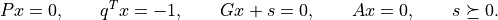
As an example we compute the trade-off curve on page 187 of the book Convex Optimization, by solving the quadratic program
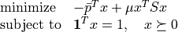
for a sequence of positive values of  . The code below computes
the trade-off curve and produces two figures using the
Matplotlib package.
. The code below computes
the trade-off curve and produces two figures using the
Matplotlib package.


from math import sqrt
from cvxopt import matrix
from cvxopt.blas import dot
from cvxopt.solvers import qp
import pylab
# Problem data.
n = 4
S = matrix([[ 4e-2, 6e-3, -4e-3, 0.0 ],
[ 6e-3, 1e-2, 0.0, 0.0 ],
[-4e-3, 0.0, 2.5e-3, 0.0 ],
[ 0.0, 0.0, 0.0, 0.0 ]])
pbar = matrix([.12, .10, .07, .03])
G = matrix(0.0, (n,n))
G[::n+1] = -1.0
h = matrix(0.0, (n,1))
A = matrix(1.0, (1,n))
b = matrix(1.0)
# Compute trade-off.
N = 100
mus = [ 10**(5.0*t/N-1.0) for t in range(N) ]
portfolios = [ qp(mu*S, -pbar, G, h, A, b)['x'] for mu in mus ]
returns = [ dot(pbar,x) for x in portfolios ]
risks = [ sqrt(dot(x, S*x)) for x in portfolios ]
# Plot trade-off curve and optimal allocations.
pylab.figure(1, facecolor='w')
pylab.plot(risks, returns)
pylab.xlabel('standard deviation')
pylab.ylabel('expected return')
pylab.axis([0, 0.2, 0, 0.15])
pylab.title('Risk-return trade-off curve (fig 4.12)')
pylab.yticks([0.00, 0.05, 0.10, 0.15])
pylab.figure(2, facecolor='w')
c1 = [ x[0] for x in portfolios ]
c2 = [ x[0] + x[1] for x in portfolios ]
c3 = [ x[0] + x[1] + x[2] for x in portfolios ]
c4 = [ x[0] + x[1] + x[2] + x[3] for x in portfolios ]
pylab.fill(risks + [.20], c1 + [0.0], '#F0F0F0')
pylab.fill(risks[-1::-1] + risks, c2[-1::-1] + c1, facecolor = '#D0D0D0')
pylab.fill(risks[-1::-1] + risks, c3[-1::-1] + c2, facecolor = '#F0F0F0')
pylab.fill(risks[-1::-1] + risks, c4[-1::-1] + c3, facecolor = '#D0D0D0')
pylab.axis([0.0, 0.2, 0.0, 1.0])
pylab.xlabel('standard deviation')
pylab.ylabel('allocation')
pylab.text(.15,.5,'x1')
pylab.text(.10,.7,'x2')
pylab.text(.05,.7,'x3')
pylab.text(.01,.7,'x4')
pylab.title('Optimal allocations (fig 4.12)')
pylab.show()
Second-Order Cone Programming¶
The function socp is a simpler interface to
conelp for
cone programs with no linear matrix inequality constraints.
-
cvxopt.solvers.socp(c[, Gl, hl[, Gq, hq[, A, b[, solver[, primalstart[, dualstart]]]]]])¶ Solves the pair of primal and dual second-order cone programs
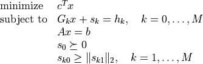
and
The inequalities
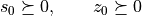
are componentwise vector inequalities. In the other inequalities, it is assumed that the variables are partitioned as
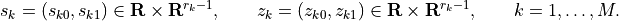
The input argument
cis a real single-column dense matrix. The argumentsGlandhlare the coefficient matrix and
the right-hand side
and
the right-hand side  of the componentwise inequalities.
of the componentwise inequalities.
Glis a real dense or sparse matrix;hlis a real single-column dense matrix. The default values forGlandhlare matrices with zero rows.The argument
Gqis a list of dense or sparse matrices
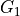, …, 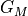. The argument
dense or sparse matrices
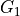, …, 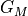. The argument hqis a list of dense single-column matrices  , ldots,
, ldots,
 . The elements of
. The elements of Gqandhqmust have at least one row. The default values ofGqandhqare empty lists.Ais dense or sparse matrix andbis a single-column dense matrix. The default values forAandbare matrices with zero rows.The
solverargument is used to choose between two solvers: the CVXOPTconelpsolver (used whensolveris absent or equal toNoneand the external solver MOSEK (solveris'mosek'); see the section Optional Solvers. With the'mosek'option the code does not accept problems with equality constraints.primalstartanddualstartare dictionaries with optional primal, respectively, dual starting points.primalstarthas elements'x','sl','sq'.primalstart['x']andprimalstart['sl']are single-column dense matrices with the initial values of and
 ;
; primalstart['sq']is a list of single-column matrices with the initial values of , ldots,
, ldots,  .
The initial values must satisfy the inequalities in the primal problem
strictly, but not necessarily the equality constraints.
.
The initial values must satisfy the inequalities in the primal problem
strictly, but not necessarily the equality constraints.dualstarthas elements'y','zl','zq'.dualstart['y']anddualstart['zl']are single-column dense matrices with the initial values of and 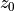.
dualstart['zq']is a list of single-column matrices with the initial values of , ldots,
, ldots,  . These values must
satisfy the dual inequalities strictly, but not necessarily the
equality constraint.
. These values must
satisfy the dual inequalities strictly, but not necessarily the
equality constraint.The arguments
primalstartanddualstartare ignored when the MOSEK solver is used.socpreturns a dictionary that include entries with keys'status','x','sl','sq','y','zl','zq'. The'sl'and'zl'fields are matrices with the primal slacks and dual variables associated with the componentwise linear inequalities. The'sq'and'zq'fields are lists with the primal slacks and dual variables associated with the second-order cone inequalities. The other entries in the output dictionary have the same meaning as in the output ofconelp.
As an example, we solve the second-order cone program
![\begin{array}{ll}
\mbox{minimize} & -2x_1 + x_2 + 5x_3 \\*[2ex]
\mbox{subject to} & \left\| \left[\begin{array}{c}
-13 x_1 + 3 x_2 + 5 x_3 - 3 \\
-12 x_1 + 12 x_2 - 6 x_3 - 2 \end{array}\right] \right\|_2
\leq -12 x_1 - 6 x_2 + 5x_3 - 12 \\*[2ex]
& \left\| \left[\begin{array}{c}
-3 x_1 + 6 x_2 + 2 x_3 \\
x_1 + 9 x_2 + 2 x_3 + 3 \\
-x_1 - 19 x_2 + 3 x_3 - 42 \end{array}\right] \right\|_2
\leq -3x_1 + 6x_2 - 10x_3 + 27.
\end{array}](_images/math/13abf6ff1ab819235d06737ba4cc4b56c12cf29f.png)
>>> from cvxopt import matrix, solvers
>>> c = matrix([-2., 1., 5.])
>>> G = [ matrix( [[12., 13., 12.], [6., -3., -12.], [-5., -5., 6.]] ) ]
>>> G += [ matrix( [[3., 3., -1., 1.], [-6., -6., -9., 19.], [10., -2., -2., -3.]] ) ]
>>> h = [ matrix( [-12., -3., -2.] ), matrix( [27., 0., 3., -42.] ) ]
>>> sol = solvers.socp(c, Gq = G, hq = h)
>>> sol['status']
optimal
>>> print(sol['x'])
[-5.02e+00]
[-5.77e+00]
[-8.52e+00]
>>> print(sol['zq'][0])
[ 1.34e+00]
[-7.63e-02]
[-1.34e+00]
>>> print(sol['zq'][1])
[ 1.02e+00]
[ 4.02e-01]
[ 7.80e-01]
[-5.17e-01]
Semidefinite Programming¶
The function sdp is a simple interface to
conelp for cone
programs with no second-order cone constraints. It also provides the
option of using the DSDP semidefinite programming solver.
-
cvxopt.solvers.sdp(c[, Gl, hl[, Gs, hs[, A, b[, solver[, primalstart[, dualstart]]]]]])¶ Solves the pair of primal and dual semidefinite programs
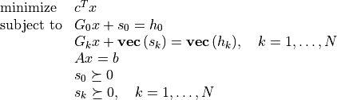
and
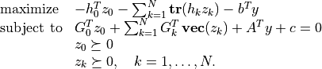
The inequalities
are componentwise vector inequalities. The other inequalities are matrix inequalities (ie, the require the left-hand sides to be positive semidefinite). We use the notation 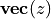 to denote a symmetric matrix
stored in column major order
as a column vector.The input argument
cis a real single-column dense matrix. The argumentsGlandhlare the coefficient matrix and
the right-hand side of the componentwise inequalities.
Glis a real dense or sparse matrix;hlis a real single-column dense matrix. The default values forGlandhlare matrices with zero rows.Gsandhsare lists of length that specify the
linear matrix inequality constraints. Gsis a list of
dense or sparse real matrices , ldots, . The
columns of these matrices can be interpreted as symmetric matrices
stored in column major order, using the BLAS 'L'-type storage (i.e., only the entries corresponding to lower triangular positions are accessed).hsis a list of dense symmetric matrices
, ldots,  . Only the lower triangular elements
of these matrices are accessed. The default values for
. Only the lower triangular elements
of these matrices are accessed. The default values for Gsandhsare empty lists.Ais a dense or sparse matrix andbis a single-column dense matrix. The default values forAandbare matrices with zero rows.The
solverargument is used to choose between two solvers: the CVXOPTconelpsolver (used whensolveris absent or equal toNone) and the external solver DSDP5 (solveris'dsdp'); see the section Optional Solvers. With the'dsdp'option the code does not accept problems with equality constraints.The optional argument
primalstartis a dictionary with keys'x','sl', and'ss', used as an optional primal starting point.primalstart['x']andprimalstart['sl']are single-column dense matrices with the initial values of and ;
primalstart['ss']is a list of square matrices with the initial values of, ldots,  . The initial values must
satisfy the inequalities in the primal problem strictly, but not
necessarily the equality constraints.
. The initial values must
satisfy the inequalities in the primal problem strictly, but not
necessarily the equality constraints.dualstartis a dictionary with keys'y','zl','zs', used as an optional dual starting point.dualstart['y']anddualstart['zl']are single-column dense matrices with the initial values of and .
dualstart['zs']is a list of square matrices with the initial values of, ldots,  . These values must satisfy
the dual inequalities strictly, but not necessarily the equality
constraint.
. These values must satisfy
the dual inequalities strictly, but not necessarily the equality
constraint.The arguments
primalstartanddualstartare ignored when the DSDP solver is used.sdpreturns a dictionary that includes entries with keys'status','x','sl','ss','y','zl','ss'. The'sl'and'zl'fields are matrices with the primal slacks and dual variables associated with the componentwise linear inequalities. The'ss'and'zs'fields are lists with the primal slacks and dual variables associated with the second-order cone inequalities. The other entries in the output dictionary have the same meaning as in the output ofconelp.
We illustrate the calling sequence with a small example.
![\begin{array}{ll}
\mbox{minimize} & x_1 - x_2 + x_3 \\
\mbox{subject to}
& x_1 \left[ \begin{array}{cc}
-7 & -11 \\ -11 & 3
\end{array}\right] +
x_2 \left[ \begin{array}{cc}
7 & -18 \\ -18 & 8
\end{array}\right] +
x_3 \left[ \begin{array}{cc}
-2 & -8 \\ -8 & 1
\end{array}\right] \preceq
\left[ \begin{array}{cc}
33 & -9 \\ -9 & 26
\end{array}\right] \\*[1ex]
& x_1 \left[ \begin{array}{ccc}
-21 & -11 & 0 \\
-11 & 10 & 8 \\
0 & 8 & 5
\end{array}\right] +
x_2 \left[ \begin{array}{ccc}
0 & 10 & 16 \\
10 & -10 & -10 \\
16 & -10 & 3
\end{array}\right] +
x_3 \left[ \begin{array}{ccc}
-5 & 2 & -17 \\
2 & -6 & 8 \\
-17 & 8 & 6
\end{array}\right] \preceq
\left[ \begin{array}{ccc}
14 & 9 & 40 \\
9 & 91 & 10 \\
40 & 10 & 15
\end{array} \right]
\end{array}](_images/math/84e264805077d2cf923fe75d31e2ed50021618da.png)
>>> from cvxopt import matrix, solvers
>>> c = matrix([1.,-1.,1.])
>>> G = [ matrix([[-7., -11., -11., 3.],
[ 7., -18., -18., 8.],
[-2., -8., -8., 1.]]) ]
>>> G += [ matrix([[-21., -11., 0., -11., 10., 8., 0., 8., 5.],
[ 0., 10., 16., 10., -10., -10., 16., -10., 3.],
[ -5., 2., -17., 2., -6., 8., -17., 8., 6.]]) ]
>>> h = [ matrix([[33., -9.], [-9., 26.]]) ]
>>> h += [ matrix([[14., 9., 40.], [9., 91., 10.], [40., 10., 15.]]) ]
>>> sol = solvers.sdp(c, Gs=G, hs=h)
>>> print(sol['x'])
[-3.68e-01]
[ 1.90e+00]
[-8.88e-01]
>>> print(sol['zs'][0])
[ 3.96e-03 -4.34e-03]
[-4.34e-03 4.75e-03]
>>> print(sol['zs'][1])
[ 5.58e-02 -2.41e-03 2.42e-02]
[-2.41e-03 1.04e-04 -1.05e-03]
[ 2.42e-02 -1.05e-03 1.05e-02]
Only the entries in Gs and hs that correspond to lower triangular
entries need to be provided, so in the example h and G may also be
defined as follows.
>>> G = [ matrix([[-7., -11., 0., 3.],
[ 7., -18., 0., 8.],
[-2., -8., 0., 1.]]) ]
>>> G += [ matrix([[-21., -11., 0., 0., 10., 8., 0., 0., 5.],
[ 0., 10., 16., 0., -10., -10., 0., 0., 3.],
[ -5., 2., -17., 0., -6., 8., 0., 0., 6.]]) ]
>>> h = [ matrix([[33., -9.], [0., 26.]]) ]
>>> h += [ matrix([[14., 9., 40.], [0., 91., 10.], [0., 0., 15.]]) ]
Exploiting Structure¶
By default, the functions
conelp and
coneqp exploit no
problem structure except (to some limited extent) sparsity. Two mechanisms
are provided for implementing customized solvers that take advantage of
problem structure.
- Providing a function for solving KKT equations
The most expensive step of each iteration of
conelporconeqpis the solution of a set of linear equations (KKT equations) of the form(1)¶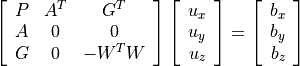
(with 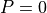 in
conelp). The matrix depends
on the current iterates and is defined as follows. We use the notation
of the sections Linear Cone Programs and Quadratic Cone Programs. Let
depends
on the current iterates and is defined as follows. We use the notation
of the sections Linear Cone Programs and Quadratic Cone Programs. Let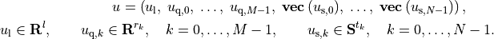
Then
is a block-diagonal matrix,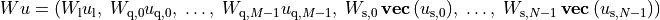
with the following diagonal blocks.
The first block is a positive diagonal scaling with a vector
 :
: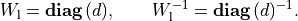
This transformation is symmetric:
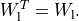
The next
blocks are positive multiples of hyperbolic
Householder transformations: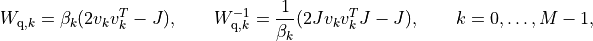
where
![\beta_k > 0, \qquad v_{k0} > 0, \qquad v_k^T Jv_k = 1, \qquad
J = \left[\begin{array}{cc} 1 & 0 \\ 0 & -I \end{array}\right].](_images/math/8fcff6b5a5c95afb39f5abaedac94b7086911410.png)
These transformations are also symmetric:
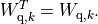
The last
blocks are congruence transformations with
nonsingular matrices:
In general, this operation is not symmetric:
It is often possible to exploit problem structure to solve (1) faster than by standard methods. The last argument
kktsolverofconelpandconeqpallows the user to supply a Python function for solving the KKT equations. This function will be called asf = kktsolver(W), whereWis a dictionary that contains the parameters of the scaling:W['d']is the positive vector that defines the diagonal scaling.W['di']is its componentwise inverse.W['beta']andW['v']are lists of length
with the coefficients and vectors that define the hyperbolic
Householder transformations.W['r']is a list of length with the matrices that
define the the congruence transformations. W['rti']is a list of length with the transposes of the inverses of the
matrices in W['r'].
The function call
f = kktsolver(W)should return a routine for solving the KKT system (1) defined byW. It will be called asf(bx, by, bz). On entry,bx,by,bzcontain the right-hand side. On exit, they should contain the solution of the KKT system, with the last component scaled, i.e., on exit,
In other words, the function returns the solution of
- Specifying constraints via Python functions
In the default use of
conelpandconeqp, the linear constraints and the quadratic term in the objective are parameterized by CVXOPT matricesG,A,P. It is possible to specify these parameters via Python functions that evaluate the corresponding matrix-vector products and their adjoints.If the argument
Gofconelporconeqpis a Python function, thenG(x, y[, alpha = 1.0, beta = 0.0, trans = 'N'])should evaluate the matrix-vector productsSimilarly, if the argument
Ais a Python function, thenA(x, y[, alpha = 1.0, beta = 0.0, trans = 'N'])should evaluate the matrix-vector productsIf the argument
Pofconeqpis a Python function, thenP(x, y[, alpha = 1.0, beta = 0.0])should evaluate the matrix-vector products
If
G,A, orPare Python functions, then the argumentkktsolvermust also be provided.
We illustrate these features with three applications.
Example: 1-norm approximation
The optimization problem
can be formulated as a linear program
By exploiting the structure in the inequalities, the cost of an iteration of an interior-point method can be reduced to the cost of least-squares problem of the same dimensions. (See section 11.8.2 in the book Convex Optimization.) The code below takes advantage of this fact.
from cvxopt import blas, lapack, solvers, matrix, spmatrix, mul, div def l1(P, q): """ Returns the solution u, w of the l1 approximation problem (primal) minimize ||P*u - q||_1 (dual) maximize q'*w subject to P'*w = 0 ||w||_infty <= 1. """ m, n = P.size # Solve the equivalent LP # # minimize [0; 1]' * [u; v] # subject to [P, -I; -P, -I] * [u; v] <= [q; -q] # # maximize -[q; -q]' * z # subject to [P', -P']*z = 0 # [-I, -I]*z + 1 = 0 # z >= 0. c = matrix(n*[0.0] + m*[1.0]) def G(x, y, alpha = 1.0, beta = 0.0, trans = 'N'): if trans=='N': # y := alpha * [P, -I; -P, -I] * x + beta*y u = P*x[:n] y[:m] = alpha * ( u - x[n:]) + beta * y[:m] y[m:] = alpha * (-u - x[n:]) + beta * y[m:] else: # y := alpha * [P', -P'; -I, -I] * x + beta*y y[:n] = alpha * P.T * (x[:m] - x[m:]) + beta * y[:n] y[n:] = -alpha * (x[:m] + x[m:]) + beta * y[n:] h = matrix([q, -q]) dims = {'l': 2*m, 'q': [], 's': []} def F(W): """ Returns a function f(x, y, z) that solves [ 0 0 P' -P' ] [ x[:n] ] [ bx[:n] ] [ 0 0 -I -I ] [ x[n:] ] [ bx[n:] ] [ P -I -D1^{-1} 0 ] [ z[:m] ] = [ bz[:m] ] [-P -I 0 -D2^{-1} ] [ z[m:] ] [ bz[m:] ] where D1 = diag(di[:m])^2, D2 = diag(di[m:])^2 and di = W['di']. """ # Factor A = 4*P'*D*P where D = d1.*d2 ./(d1+d2) and # d1 = di[:m].^2, d2 = di[m:].^2. di = W['di'] d1, d2 = di[:m]**2, di[m:]**2 D = div( mul(d1,d2), d1+d2 ) A = P.T * spmatrix(4*D, range(m), range(m)) * P lapack.potrf(A) def f(x, y, z): """ On entry bx, bz are stored in x, z. On exit x, z contain the solution, with z scaled: z./di is returned instead of z. """" # Solve for x[:n]: # # A*x[:n] = bx[:n] + P' * ( ((D1-D2)*(D1+D2)^{-1})*bx[n:] # + (2*D1*D2*(D1+D2)^{-1}) * (bz[:m] - bz[m:]) ). x[:n] += P.T * ( mul(div(d1-d2, d1+d2), x[n:]) + mul(2*D, z[:m]-z[m:]) ) lapack.potrs(A, x) # x[n:] := (D1+D2)^{-1} * (bx[n:] - D1*bz[:m] - D2*bz[m:] + (D1-D2)*P*x[:n]) u = P*x[:n] x[n:] = div(x[n:] - mul(d1, z[:m]) - mul(d2, z[m:]) + mul(d1-d2, u), d1+d2) # z[:m] := d1[:m] .* ( P*x[:n] - x[n:] - bz[:m]) # z[m:] := d2[m:] .* (-P*x[:n] - x[n:] - bz[m:]) z[:m] = mul(di[:m], u - x[n:] - z[:m]) z[m:] = mul(di[m:], -u - x[n:] - z[m:]) return f sol = solvers.conelp(c, G, h, dims, kktsolver = F) return sol['x'][:n], sol['z'][m:] - sol['z'][:m]
Example: SDP with diagonal linear term
The SDP
can be solved efficiently by exploiting properties of the diag operator.
from cvxopt import blas, lapack, solvers, matrix def mcsdp(w): """ Returns solution x, z to (primal) minimize sum(x) subject to w + diag(x) >= 0 (dual) maximize -tr(w*z) subject to diag(z) = 1 z >= 0. """ n = w.size[0] c = matrix(1.0, (n,1)) def G(x, y, alpha = 1.0, beta = 0.0, trans = 'N'): """ y := alpha*(-diag(x)) + beta*y. """ if trans=='N': # x is a vector; y is a symmetric matrix in column major order. y *= beta y[::n+1] -= alpha * x else: # x is a symmetric matrix in column major order; y is a vector. y *= beta y -= alpha * x[::n+1] def cngrnc(r, x, alpha = 1.0): """ Congruence transformation x := alpha * r'*x*r. r and x are square matrices. """ # Scale diagonal of x by 1/2. x[::n+1] *= 0.5 # a := tril(x)*r a = +r tx = matrix(x, (n,n)) blas.trmm(tx, a, side = 'L') # x := alpha*(a*r' + r*a') blas.syr2k(r, a, tx, trans = 'T', alpha = alpha) x[:] = tx[:] dims = {'l': 0, 'q': [], 's': [n]} def F(W): """ Returns a function f(x, y, z) that solves -diag(z) = bx -diag(x) - r*r'*z*r*r' = bz where r = W['r'][0] = W['rti'][0]^{-T}. """ rti = W['rti'][0] # t = rti*rti' as a nonsymmetric matrix. t = matrix(0.0, (n,n)) blas.gemm(rti, rti, t, transB = 'T') # Cholesky factorization of tsq = t.*t. tsq = t**2 lapack.potrf(tsq) def f(x, y, z): """ On entry, x contains bx, y is empty, and z contains bz stored in column major order. On exit, they contain the solution, with z scaled (vec(r'*z*r) is returned instead of z). We first solve ((rti*rti') .* (rti*rti')) * x = bx - diag(t*bz*t) and take z = - rti' * (diag(x) + bz) * rti. """ # tbst := t * bz * t tbst = +z cngrnc(t, tbst) # x := x - diag(tbst) = bx - diag(rti*rti' * bz * rti*rti') x -= tbst[::n+1] # x := (t.*t)^{-1} * x = (t.*t)^{-1} * (bx - diag(t*bz*t)) lapack.potrs(tsq, x) # z := z + diag(x) = bz + diag(x) z[::n+1] += x # z := -vec(rti' * z * rti) # = -vec(rti' * (diag(x) + bz) * rti cngrnc(rti, z, alpha = -1.0) return f sol = solvers.conelp(c, G, w[:], dims, kktsolver = F) return sol['x'], sol['z']
- Example: Minimizing 1-norm subject to a 2-norm constraint
In the second example, we use a similar trick to solve the problem
The code below is efficient, if we assume that the number of rows in
is greater than or equal to the number of columns.def qcl1(A, b): """ Returns the solution u, z of (primal) minimize || u ||_1 subject to || A * u - b ||_2 <= 1 (dual) maximize b^T z - ||z||_2 subject to || A'*z ||_inf <= 1. Exploits structure, assuming A is m by n with m >= n. """ m, n = A.size # Solve equivalent cone LP with variables x = [u; v]. # # minimize [0; 1]' * x # subject to [ I -I ] * x <= [ 0 ] (componentwise) # [-I -I ] * x <= [ 0 ] (componentwise) # [ 0 0 ] * x <= [ 1 ] (SOC) # [-A 0 ] [ -b ] # # maximize -t + b' * w # subject to z1 - z2 = A'*w # z1 + z2 = 1 # z1 >= 0, z2 >=0, ||w||_2 <= t. c = matrix(n*[0.0] + n*[1.0]) h = matrix( 0.0, (2*n + m + 1, 1)) h[2*n] = 1.0 h[2*n+1:] = -b def G(x, y, alpha = 1.0, beta = 0.0, trans = 'N'): y *= beta if trans=='N': # y += alpha * G * x y[:n] += alpha * (x[:n] - x[n:2*n]) y[n:2*n] += alpha * (-x[:n] - x[n:2*n]) y[2*n+1:] -= alpha * A*x[:n] else: # y += alpha * G'*x y[:n] += alpha * (x[:n] - x[n:2*n] - A.T * x[-m:]) y[n:] -= alpha * (x[:n] + x[n:2*n]) def Fkkt(W): """ Returns a function f(x, y, z) that solves [ 0 G' ] [ x ] = [ bx ] [ G -W'*W ] [ z ] [ bz ]. """ # First factor # # S = G' * W**-1 * W**-T * G # = [0; -A]' * W3^-2 * [0; -A] + 4 * (W1**2 + W2**2)**-1 # # where # # W1 = diag(d1) with d1 = W['d'][:n] = 1 ./ W['di'][:n] # W2 = diag(d2) with d2 = W['d'][n:] = 1 ./ W['di'][n:] # W3 = beta * (2*v*v' - J), W3^-1 = 1/beta * (2*J*v*v'*J - J) # with beta = W['beta'][0], v = W['v'][0], J = [1, 0; 0, -I]. # As = W3^-1 * [ 0 ; -A ] = 1/beta * ( 2*J*v * v' - I ) * [0; A] beta, v = W['beta'][0], W['v'][0] As = 2 * v * (v[1:].T * A) As[1:,:] *= -1.0 As[1:,:] -= A As /= beta # S = As'*As + 4 * (W1**2 + W2**2)**-1 S = As.T * As d1, d2 = W['d'][:n], W['d'][n:] d = 4.0 * (d1**2 + d2**2)**-1 S[::n+1] += d lapack.potrf(S) def f(x, y, z): # z := - W**-T * z z[:n] = -div( z[:n], d1 ) z[n:2*n] = -div( z[n:2*n], d2 ) z[2*n:] -= 2.0*v*( v[0]*z[2*n] - blas.dot(v[1:], z[2*n+1:]) ) z[2*n+1:] *= -1.0 z[2*n:] /= beta # x := x - G' * W**-1 * z x[:n] -= div(z[:n], d1) - div(z[n:2*n], d2) + As.T * z[-(m+1):] x[n:] += div(z[:n], d1) + div(z[n:2*n], d2) # Solve for x[:n]: # # S*x[:n] = x[:n] - (W1**2 - W2**2)(W1**2 + W2**2)^-1 * x[n:] x[:n] -= mul( div(d1**2 - d2**2, d1**2 + d2**2), x[n:]) lapack.potrs(S, x) # Solve for x[n:]: # # (d1**-2 + d2**-2) * x[n:] = x[n:] + (d1**-2 - d2**-2)*x[:n] x[n:] += mul( d1**-2 - d2**-2, x[:n]) x[n:] = div( x[n:], d1**-2 + d2**-2) # z := z + W^-T * G*x z[:n] += div( x[:n] - x[n:2*n], d1) z[n:2*n] += div( -x[:n] - x[n:2*n], d2) z[2*n:] += As*x[:n] return f dims = {'l': 2*n, 'q': [m+1], 's': []} sol = solvers.conelp(c, G, h, dims, kktsolver = Fkkt) if sol['status'] == 'optimal': return sol['x'][:n], sol['z'][-m:] else: return None, None
- Example: 1-norm regularized least-squares
As an example that illustrates how structure can be exploited in
coneqp, we consider the 1-norm regularized least-squares problemwith variable
. The problem is equivalent to the quadratic
programwith variables
and . The implementation below is
efficient when has many more columns than rows.from cvxopt import matrix, spdiag, mul, div, blas, lapack, solvers, sqrt import math def l1regls(A, y): """ Returns the solution of l1-norm regularized least-squares problem minimize || A*x - y ||_2^2 + || x ||_1. """ m, n = A.size q = matrix(1.0, (2*n,1)) q[:n] = -2.0 * A.T * y def P(u, v, alpha = 1.0, beta = 0.0 ): """ v := alpha * 2.0 * [ A'*A, 0; 0, 0 ] * u + beta * v """ v *= beta v[:n] += alpha * 2.0 * A.T * (A * u[:n]) def G(u, v, alpha=1.0, beta=0.0, trans='N'): """ v := alpha*[I, -I; -I, -I] * u + beta * v (trans = 'N' or 'T') """ v *= beta v[:n] += alpha*(u[:n] - u[n:]) v[n:] += alpha*(-u[:n] - u[n:]) h = matrix(0.0, (2*n,1)) # Customized solver for the KKT system # # [ 2.0*A'*A 0 I -I ] [x[:n] ] [bx[:n] ] # [ 0 0 -I -I ] [x[n:] ] = [bx[n:] ]. # [ I -I -D1^-1 0 ] [zl[:n]] [bzl[:n]] # [ -I -I 0 -D2^-1 ] [zl[n:]] [bzl[n:]] # # where D1 = W['di'][:n]**2, D2 = W['di'][n:]**2. # # We first eliminate zl and x[n:]: # # ( 2*A'*A + 4*D1*D2*(D1+D2)^-1 ) * x[:n] = # bx[:n] - (D2-D1)*(D1+D2)^-1 * bx[n:] + # D1 * ( I + (D2-D1)*(D1+D2)^-1 ) * bzl[:n] - # D2 * ( I - (D2-D1)*(D1+D2)^-1 ) * bzl[n:] # # x[n:] = (D1+D2)^-1 * ( bx[n:] - D1*bzl[:n] - D2*bzl[n:] ) # - (D2-D1)*(D1+D2)^-1 * x[:n] # # zl[:n] = D1 * ( x[:n] - x[n:] - bzl[:n] ) # zl[n:] = D2 * (-x[:n] - x[n:] - bzl[n:] ). # # The first equation has the form # # (A'*A + D)*x[:n] = rhs # # and is equivalent to # # [ D A' ] [ x:n] ] = [ rhs ] # [ A -I ] [ v ] [ 0 ]. # # It can be solved as # # ( A*D^-1*A' + I ) * v = A * D^-1 * rhs # x[:n] = D^-1 * ( rhs - A'*v ). S = matrix(0.0, (m,m)) Asc = matrix(0.0, (m,n)) v = matrix(0.0, (m,1)) def Fkkt(W): # Factor # # S = A*D^-1*A' + I # # where D = 2*D1*D2*(D1+D2)^-1, D1 = d[:n]**-2, D2 = d[n:]**-2. d1, d2 = W['di'][:n]**2, W['di'][n:]**2 # ds is square root of diagonal of D ds = math.sqrt(2.0) * div( mul( W['di'][:n], W['di'][n:]), sqrt(d1+d2) ) d3 = div(d2 - d1, d1 + d2) # Asc = A*diag(d)^-1/2 Asc = A * spdiag(ds**-1) # S = I + A * D^-1 * A' blas.syrk(Asc, S) S[::m+1] += 1.0 lapack.potrf(S) def g(x, y, z): x[:n] = 0.5 * ( x[:n] - mul(d3, x[n:]) + mul(d1, z[:n] + mul(d3, z[:n])) - mul(d2, z[n:] - mul(d3, z[n:])) ) x[:n] = div( x[:n], ds) # Solve # # S * v = 0.5 * A * D^-1 * ( bx[:n] - # (D2-D1)*(D1+D2)^-1 * bx[n:] + # D1 * ( I + (D2-D1)*(D1+D2)^-1 ) * bzl[:n] - # D2 * ( I - (D2-D1)*(D1+D2)^-1 ) * bzl[n:] ) blas.gemv(Asc, x, v) lapack.potrs(S, v) # x[:n] = D^-1 * ( rhs - A'*v ). blas.gemv(Asc, v, x, alpha=-1.0, beta=1.0, trans='T') x[:n] = div(x[:n], ds) # x[n:] = (D1+D2)^-1 * ( bx[n:] - D1*bzl[:n] - D2*bzl[n:] ) # - (D2-D1)*(D1+D2)^-1 * x[:n] x[n:] = div( x[n:] - mul(d1, z[:n]) - mul(d2, z[n:]), d1+d2 )\ - mul( d3, x[:n] ) # zl[:n] = D1^1/2 * ( x[:n] - x[n:] - bzl[:n] ) # zl[n:] = D2^1/2 * ( -x[:n] - x[n:] - bzl[n:] ). z[:n] = mul( W['di'][:n], x[:n] - x[n:] - z[:n] ) z[n:] = mul( W['di'][n:], -x[:n] - x[n:] - z[n:] ) return g return solvers.coneqp(P, q, G, h, kktsolver = Fkkt)['x'][:n]
Optional Solvers¶
CVXOPT includes optional interfaces to several other optimization libraries.
- GLPK
lpwith thesolveroption set to'glpk'uses the simplex algorithm in GLPK (GNU Linear Programming Kit).- MOSEK
lp,socp, andqpwith thesolveroption set to'mosek'option use MOSEK version 5.- DSDP
GLPK, MOSEK and DSDP are not included in the CVXOPT distribution and need to be installed separately.
Algorithm Parameters¶
In this section we list some algorithm control parameters that can be
modified without editing the source code. These control parameters are
accessible via the dictionary solvers.options. By default the
dictionary is empty and the default values of the parameters are
used.
One can change the parameters in the default solvers by adding entries with the following key values.
'show_progress'TrueorFalse; turns the output to the screen on or off (default:True).'maxiters'maximum number of iterations (default:
100).'abstol'absolute accuracy (default:
1e-7).'reltol'relative accuracy (default:
1e-6).'feastol'tolerance for feasibility conditions (default:
1e-7).'refinement'number of iterative refinement steps when solving KKT equations (default:
0if the problem has no second-order cone or matrix inequality constraints;1otherwise).
For example the command
>>> from cvxopt import solvers
>>> solvers.options['show_progress'] = False
turns off the screen output during calls to the solvers.
The tolerances 'abstol', 'reltol' and 'feastol'
have the following meaning. conelp
terminates with status 'optimal' if
and
and
It returns with status 'primal infeasible' if
It returns with status 'dual infeasible' if
The functions lp <cvxopt.solvers.lp,
socp and
sdp call conelp
and hence use the same stopping criteria.
The function coneqp terminates with
status 'optimal' if
and
and at least one of the following three conditions is satisfied:
or
or
Here
The function qp calls
coneqp and hence uses the same
stopping criteria.
The control parameters listed in the GLPK documentation are set
to their default values and can be customized by making an entry
in solvers.options['glpk']. The entry must be a
dictionary in which the key/value pairs are GLPK parameter names
and values. For example, the command
>>> from cvxopt import solvers
>>> solvers.options['glpk'] = {'msg_lev' : 'GLP_MSG_OFF'}
turns off the screen output in subsequent
lp calls with the 'glpk' option.
The MOSEK interior-point algorithm parameters are set to their default
values. They can be modified by adding an entry
solvers.options['mosek']. This entry is a dictionary with
MOSEK parameter/value pairs, with the parameter names imported from
mosek. For details see Section 15 of the MOSEK Python API Manual.
For example, the commands
>>> from cvxopt import solvers
>>> import mosek
>>> solvers.options['mosek'] = {mosek.iparam.log: 0}
turn off the screen output during calls of
lp or socp with
the 'mosek' option.
The following control parameters in solvers.options['dsdp'] affect the
execution of the DSDP algorithm:
'DSDP_Monitor'the interval (in number of iterations) at which output is printed to the screen (default:
0).'DSDP_MaxIts'maximum number of iterations.
'DSDP_GapTolerance'relative accuracy (default:
1e-5).
It is also possible to override the options specified in the
dictionary solvers.options by passing a dictionary with
options as a keyword argument. For example, the commands
>>> from cvxopt import solvers
>>> opts = {'maxiters' : 50}
>>> solvers.conelp(c, G, h, options = opts)
override the options specified in the dictionary
solvers.options and use the options in the dictionary
opts instead. This is useful e.g. when several problem
instances should be solved in parallel, but using different options.